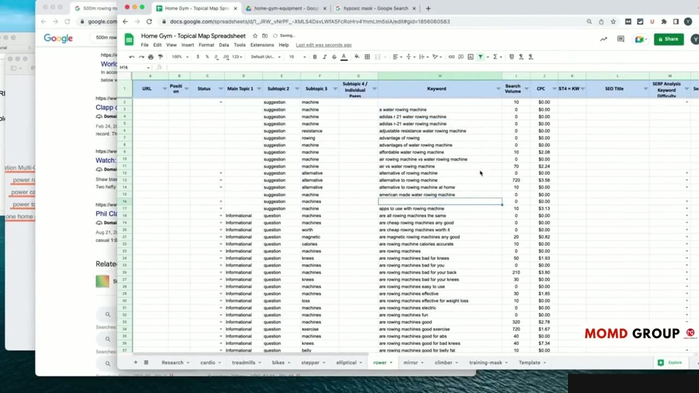
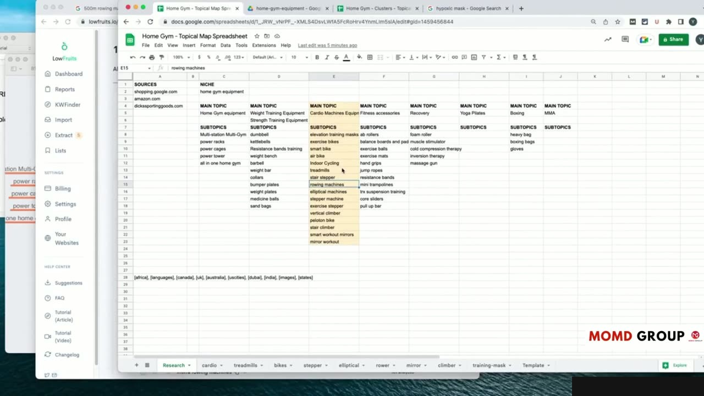
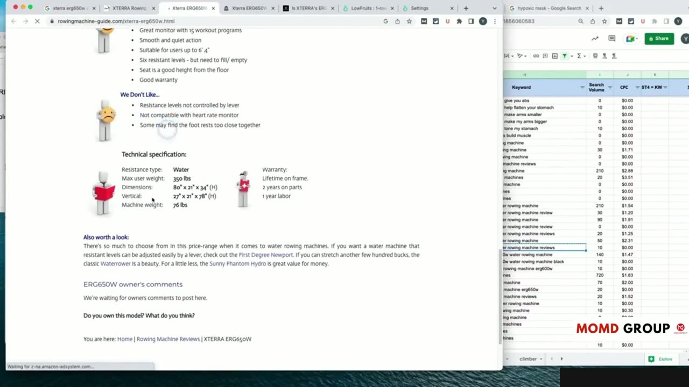
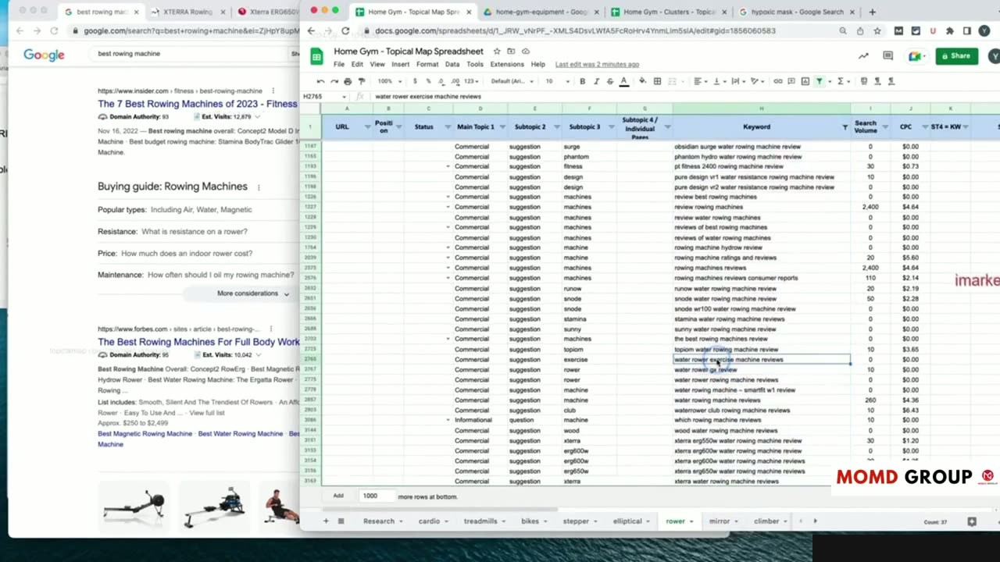

Practical Case Study: WordPress Site Setup & Hierarchy Execution
Thiết lập Ban đầu trên WordPress cho Cấu trúc Topical Map
Bài thực hành số 7 là video dài nhất học phần (hơn 24 phút), đưa học viên vào môi trường quản trị thực tế của WordPress để hiện thực hóa bản đồ chủ đề.
Yoyao bắt đầu từ các thiết lập cốt lõi nhất:
- Cấu hình đường dẫn tĩnh (Permalinks Settings) tối ưu cho SEO: /%postname%/ hoặc cấu hình chuyên biệt có danh mục.
- Cài đặt plugin hỗ trợ phân loại và quản trị cấu trúc taxonomy chuyên sâu.
- Tối ưu hóa các trang chức năng hệ thống để đảm bảo website hoạt động mượt mà và bảo mật.
Những thiết lập nền tảng này giúp website sẵn sàng tiếp nhận hàng trăm bài viết mà không gặp sự cố xung đột đường dẫn.

Tạo Lập Cây Thư mục Danh mục (Categories) theo Chuẩn Silo
Yoyao trực tiếp tạo từng Danh mục mẹ và Danh mục con trên giao diện quản trị WordPress:
- Thiết lập Danh mục mẹ đại diện cho các Silo lớn.
- Tạo các Danh mục con gắn vào đúng Danh mục mẹ tương ứng.
- Viết mô tả chuẩn SEO giàu ngữ nghĩa cho từng trang danh mục và gán hình ảnh đại diện chuyên nghiệp.
Việc này biến các trang danh mục WordPress thành những trang đích (Hub Pages) có sức mạnh cạnh tranh thứ hạng rất cao trên Google.

Thiết kế Thanh Điều hướng Menu và Breadcrumbs Chuẩn SEO
Hệ thống điều hướng là cầu nối quan trọng giữa người dùng và cấu trúc thông tin của website:
Yoyao hướng dẫn cách đưa các Silo chính lên thanh menu đầu trang (Header Navigation) và menu chân trang (Footer). Cài đặt và định cấu hình hệ thống Breadcrumbs chuẩn schema để Google hiển thị rõ ràng đường dẫn phân tầng ngay trên kết quả tìm kiếm SERP.
Điều này cải thiện đáng kể trải nghiệm người dùng và giúp bot tìm kiếm dễ dàng định vị vị trí của từng trang trong tổng thể website.

Kiểm tra Kỹ thuật Kiến trúc Trước khi Đăng Bài
Kết thúc bài học, Yoyao tiến hành quét kiểm tra kỹ thuật toàn diện trang web WordPress mới tạo lập:
Đảm bảo không có lỗi 404, không có trang mồ côi (Orphan Pages) và sitemap XML tự động cập nhật chính xác theo cấu trúc phân tầng mới tạo.
Khung nhà đã hoàn thiện vững chãi, sẵn sàng cho việc đưa nội dung bài viết và liên kết nội bộ vào thi công.

Nguồn và đối chiếu
- Topical Maps Unlocked 2.0 · 11-From Theory to Practice Module/video 6.mp4 (Video bài học chính).
- Bản tiếng Anh không có video riêng cho bài học này; nội dung đối chiếu trực tiếp từ slide và video chính.